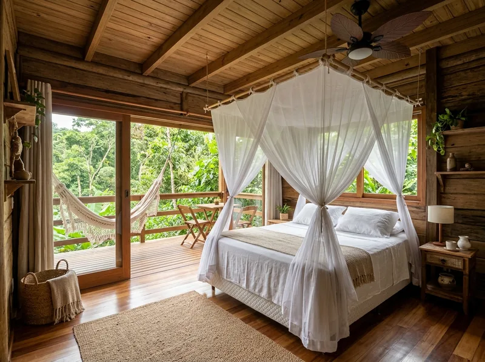
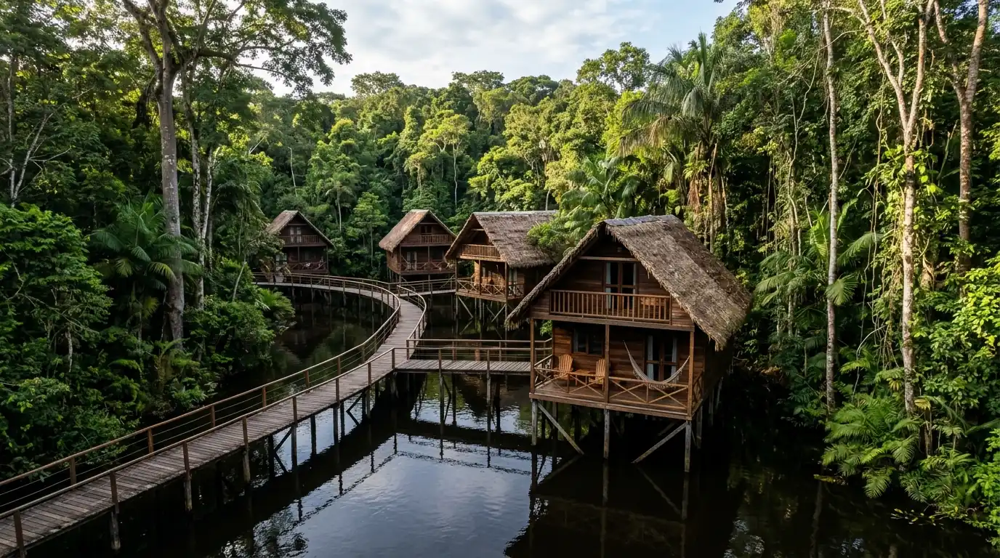
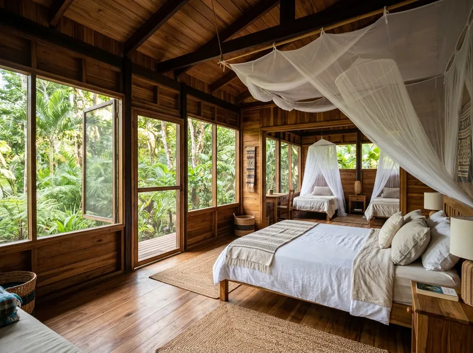
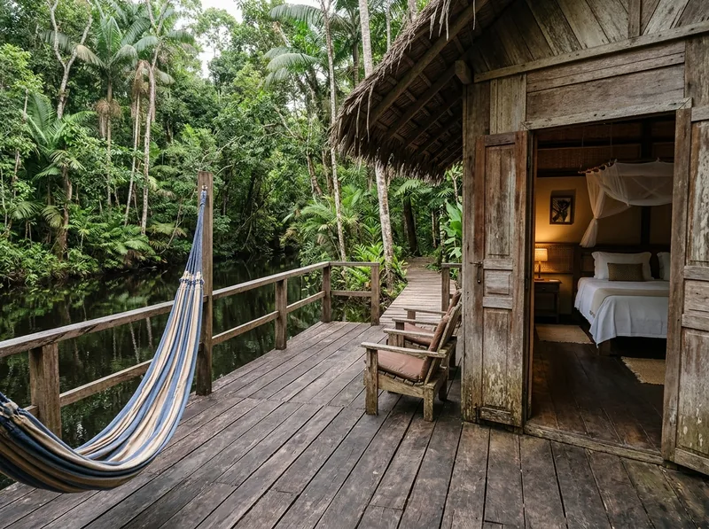

Bangalô Casal
Varanda com rede, mosquiteiro, ventilador de teto
R$ 350/ noite com café
Consultar pelo WhatsApp
Atendimento rápido pelo WhatsApp e café da manhã incluso.
Ver acomodaçõesBangalôs suspensos no meio da mata, com banho de igarapé, trilhas com guia local e culinária regional. Energia solar e coleta de água da chuva.

Varanda com rede, mosquiteiro, ventilador de teto


Ramal do Igarapé, km 3 · acesso por estrada de terra (endereço ilustrativo)